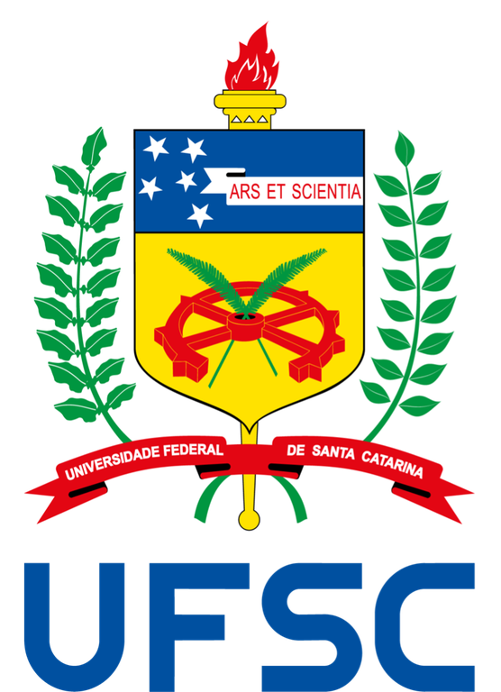

Sobre o Projeto ASCENC
O projeto ASCENC - Avaliação de Sustentabilidade em Cidades e Edificações em Novos Climas - surgiu a partir da junção da tese de doutorado de Igor Catão Martins Vaz com o projeto de pesquisa do professor Enedir Ghisi. O ASCENC faz parte do projeto de pesquisa "Avaliação da sustentabilidade de edificações e centros urbanos", submetido ao CNPQ na chamada CNPq/MCTI No 10/2023, sob coordenação de Enedir Ghisi. Como diferença, incluem-se artigos da tese de Igor Catão, a qual aborda o impacto de mudanças climáticas na avaliação ambiental do ambiente construído.
Desse modo, o projeto trabalha três principais eixos temáticos:
- Eixos de Climas Futuros: Discute métodos recentes para compreender o impacto das mudanças climáticas nas cidades brasileiras, incluindo variáveis como temperatura do ar, vento, precipitação e radiação solar.
- Eixo das Cidades: Analisa como as cidades podem ser adaptadas para garantir habitabilidade e resiliência climática, com foco em conforto térmico externo e políticas públicas.
- Eixo das Edificações: Avalia como decisões urbanísticas e a variação de climas futuros impactam os fluxos energéticos, hídricos e de materiais dos edifícios, com ênfase na Avaliação de Ciclo de Vida.
Alinhamento com os ODS
O projeto ASCENC está alinhado com os Objetivos de Desenvolvimento Sustentável (ODS) da ONU, promovendo ações para sustentabilidade e resiliência urbana. São abordados principalmente:
ODS 6 |
ODS 7 |
ODS 11 |
ODS 13 |
Universidades com colaboração:
Universidade Federal de Santa Catarina (UFSC) Programa de Pós-Graduação em Engenharia Civil (PPGEC)

Universidade de Coimbra (UC)
Faculdade de Ciências e Tecnologia da Universidade de Coimbra (FCTUC)
Universidade de São Paulo (USP)
Escola de Engenharia de
São Carlos (EESC)